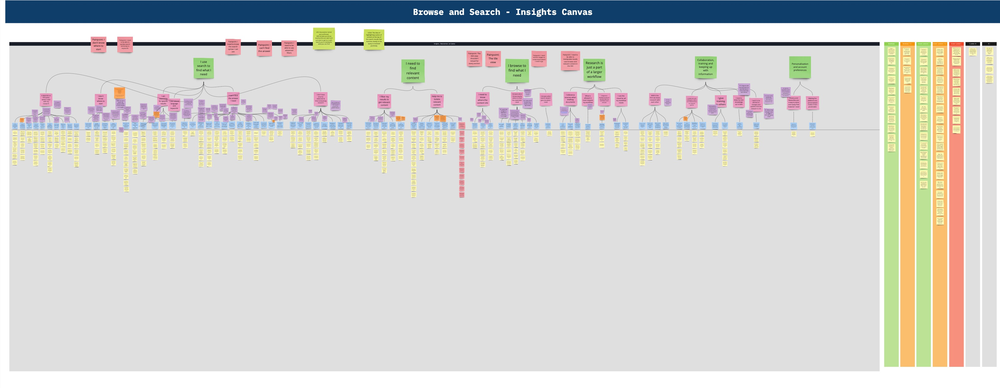
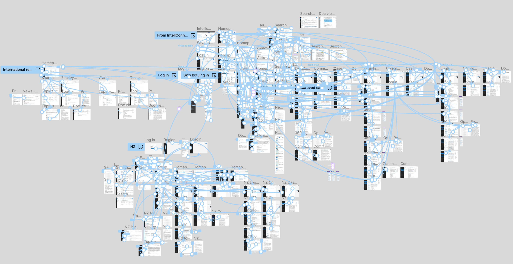
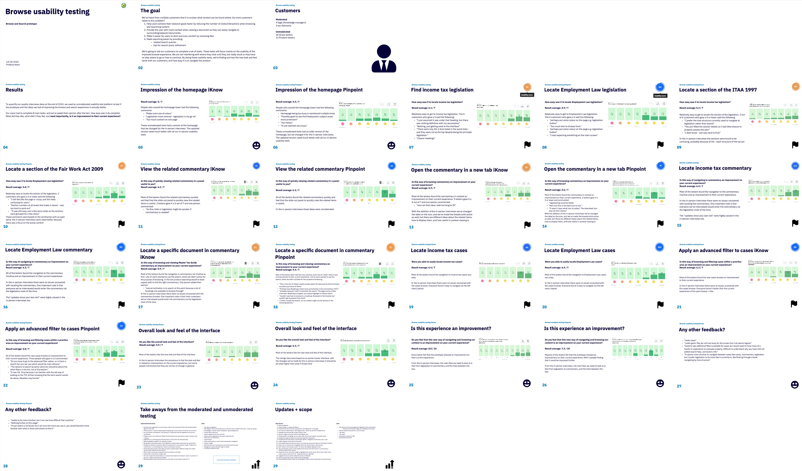
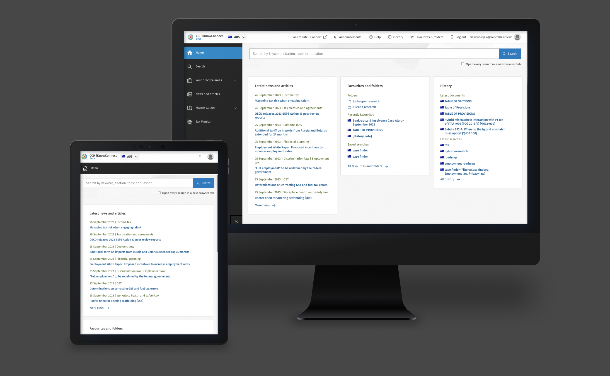
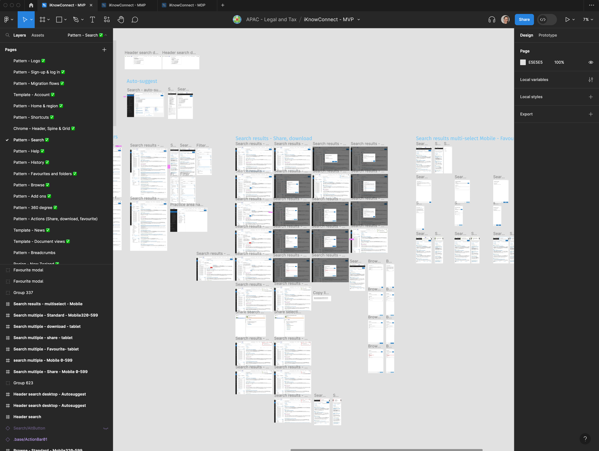

Wolters Kluwer AU
Enabling efficient tax, accounting & legal research
Platform Migration
UX Research
Product Strategy
50,000+ Users
My Role
Sole UX designer across the full lifecycle of this project, from initial research strategy and contextual inquiry through to product vision, migration strategy, design system implementation, and launch. I led all research planning, scripting, analysis and synthesis, established a living research taxonomy in Dovetail, designed the end-to-end product-led transition strategy, and managed a junior UX designer hired to handle production design and developer collaboration as the project scaled. I also presented our discovery and design approach directly to executives and the broader organisation.
Background
IntelliConnect was a legacy legal and tax research platform with over 50,000 users across the APAC region. Loved by many, particularly long-term users who had worked with it for a decade or more, but built without design or user experience in mind, accumulating significant technical debt over the years. A global company directive set a hard deadline: sunset the platform by end of 2023.
The challenge was compounded by the fact that Wolters Kluwer had four products in market across the region: IntelliConnect, iKnow (for small accounting firms), a separate New Zealand product, and Pinpoint (for smaller legal firms). Smaller firms loved the newer platforms; larger firms hadn't moved. With a small APAC product team and a single UX designer, we had to consolidate all four into one future-proof platform without losing customers or revenue in the process.
This became Project Tahi, named after the Māori word for "one". The goal: one platform, one experience, built around how our customers actually work.
Research
First, we needed to understand the real pain points rather than rely on assumptions. In early 2020, with COVID having just hit and an 8-hour time difference between me (based in the Netherlands) and our APAC customers, we conducted all research remotely. By combining efforts across product, editorial, and commercial teams, we recruited and interviewed 10+ customers across Australia and New Zealand, including IntelliConnect users and those who had already moved to iKnow or Pinpoint.

Browse and search insights canvas: synthesising hundreds of data points into themed job-to-be-done clusters
I created the research plan and scripts, analysed all interviews, and ran the contextual inquiry process, synthesising findings into an affinity wall that anchored every subsequent design decision. The research focused on two core user pathways: search and browse. Both emerged clearly as the most critical pain points to solve.

Full interactive prototype: all screens and flows connected across user journeys for developer handoff and stakeholder review
Following this, I organised a full-day workshop to walk the wall, brainstorm design directions, and validate early concepts. We then returned to customers for moderated online interviews and unmoderated usability testing via Maze, using a high-fidelity Figma prototype to compare the efficiency of the new design against the old.

Browse and search usability testing: 29-slide Maze report comparing iKnow vs Pinpoint across all key tasks
In parallel, I built a living research taxonomy in Dovetail: a searchable, tagged repository of every customer insight across all research efforts, NPS scores, support emails, surveys, and satisfaction data. Any stakeholder could query it by user role, organisation size, region, sentiment, and more. It's still being actively added to today.

Dovetail research taxonomy: a searchable, tagged repository of all customer insights, filterable by role, org size, region, sentiment and more
Design
With research synthesis complete, I moved into designing the new platform end-to-end, from information architecture and navigation through to every core pattern and template. The Figma project alone spanned MVP, MMP, and MDP phases, with pattern pages covering every surface from search and browse to onboarding, history, favourites, and migration flows.

CCH iKnowConnect beta: the redesigned platform on desktop and tablet, showing the new home experience

User insights board: tracking and categorising iKnowConnect beta feedback in real time to inform iteration priorities
Migration Strategy
The biggest business risk wasn't the product itself; it was the transition. How do you move 50,000 users off a platform many had used for over a decade, without overwhelming customer success teams or triggering churn? The answer was a product-led transition, where most of the migration effort happened from within the products themselves, not through external comms or sales calls.

Figma project: MVP through MDP phases, covering every pattern page across the full iKnowConnect product
We designed a four-phase rollout:
- Early Bird Beta: invite-only for high-value customers, giving us controlled feedback before broader release
- General Beta: all IntelliConnect users could opt in to try the new platform, supported by in-product banners, onboarding flows, tooltips, and training
- Automatic redirection: users redirected by default, with a temporary switch-back option for those still dependent on legacy features
- Sunset: all four legacy platforms retired by end of 2023
Every transition touchpoint (banners, notifications, satisfaction prompts, onboarding flows, help files, content redirect mapping) was treated as a UX problem. All feedback collected during the beta was analysed and tracked in Dovetail, keeping the insights repository current throughout the transition.
Outcome
From product genesis in early 2022 to first beta launch in January 2023 to full IntelliConnect sunset by end of 2023. The new platform, CCH iKnowConnect, launched on time and delivered results that far exceeded expectations. Customers described it as "the perfect baby between iKnow and IntelliConnect", a product that combined the simplicity and modernity of the newer platforms with the depth and content richness that larger firms had always needed.
-10→+30
NPS improvement from legacy platform to new product
95%
Of the 50,000+ user base successfully transitioned
4→1
Legacy platforms consolidated into a single future-proof product